Development Environment Setup
If you are looking to make an enhancement or fix a defect in CIMTool itself, these instructions help you get setup with a development environment to work on CIMTool as a developer. Users of CIMTool generally don't need to be concerned with these details.
Part 1: Eclipse Installation
The following steps describe how to locate, install and setup Eclipse plug-ins development environment (PDE).
Info
A special edition of the Eclipse plug-ins development environment (PDE) is required to develop CIMTool. This environment is known as the Eclipse for RCP and RAP Developers package (the newer 4.x PDE package is referred to as the Eclipse Committers package). Since CIMTool is currently built on the older Eclipse 3.x SWT plug-ins platform this older version is required.
Step 1: Download Eclipse PDE
The Windows 64-bit version of Eclipse PDE 3.7.2 (Indigo) can be downloaded at eclipse-rcp-indigo-SR2-win32-x86_64.zip. (Note that versions for Mac and Linux are also available at Eclipse for RCP and RAP Developers but the instructions that follow are for Windows only.)
Step 2: Install Java
Though the CIMTool plug-ins themselves are configured and compiled for a later version of Java, the Eclipse PDE 3.7.2 (Indigo) development environment itself requires Java 1.5. If you do not have this older version of the JRE or JDK on your system you should locate and install it before moving on to the next step. Currently, Oracle's Java Archives page links to the Java Development Kit 5.0 Update 22 Windows 64-bit release (i.e. the jdk-1_5_0_22-windows-amd64.exe installer). Note that you will need to accept Oracle's license agreement and have a (free) Oracle account to do so. Feel free to locate and install Java 1.5 from an alternate provider if desired.
Step 3: Extract Eclipse PDE
The installation process for the Eclipse environment is straightforward in that it involves simply extracting the eclipse-rcp-indigo-SR2-win32-x86_64.zip archive downloaded in Step 1. It should be noted that depending on where you choose to extract the archive on Windows, the process may fail due to path names being too long. If this occurs it is suggested you create a temp directory off of the root of one of your local drives (e.g. C:\temp-indigo) and extract the ZIP archive into that folder. The shorter base path should prevent "path too long" errors while extracting the archive. A folder called \eclipse will be created under the selected extract directory and will contain your eclipse environment. Feel free to relocate this new folder to a location on the file system where you prefer to host your Eclipse plug-ins development environment.
Dealing with newer Java versions
If an attempt is made to launch the development environment directly via the eclipse.exe executable, the system default JRE/JDK is used and if this is a newer version of Java (e.g. Java 11) you will see a dialog similar to the following:
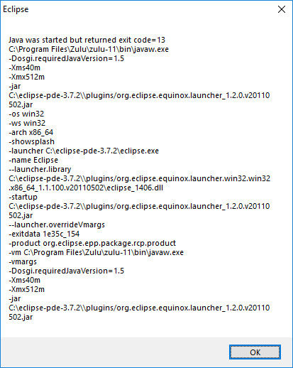
To resolve this, create a shortcut to the eclipse.exe that explicitly specifies the JRE/JDK to be used.
- Create the shortcut by performing a right mouse click on the
eclipse.exeexecutable and selectingCreate shortcut - Next, right mouse click on the new shortcut and select
Properties. In the Target text field shown below specify a launch configuration consistent with your system's installation. The field below (though not fully visible) contains an example launch configuration illustrating the use of the-vmoption to specify the JRE/JDK Eclipse should use at startup:
C:\eclipse-committers-3.7.2\eclipse.exe -vm "C:\Program Files\Java\jdk1.5.0_22\bin\javaw.exe"

Part 2: Install/Update Additional Plugin Dependencies
There are two additional plugin dependencies needed by CIMTool that are not pre-packaged with the Eclipse 3.7.2 Plugin Development Environment. These dependencies must be installed prior to importing the CIMTool project in Part 3 of these instructions. In addition, an update of the EGit plugin bundled with Eclipse is required if using EGit rather than external Git tooling to manage code changes in Git.
Install: Eclipse EMF 2.6.0 (org.eclipse.emf) Plugin
The installation of this plugin is performed manually using the steps as outlined. Be sure that your instance of Eclipse is shut down before performing the installation.
Step 1: Download Eclipse EMF
Download the Eclipse EMF (Core) 2.6.0 Plugin and temporarily copy it to a local directory.
Step 2: Locate \dropins
Locate the \dropins directory as illustrated in the screenshot below and drop the plugin jar into it.
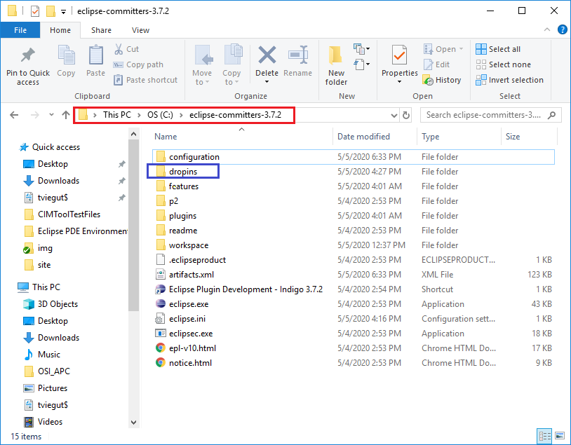
Step 3: Verify Installation
Last, launch Eclipse and verify that the plug-in was properly installed. It should appear within the Plug-ins tab as shown.
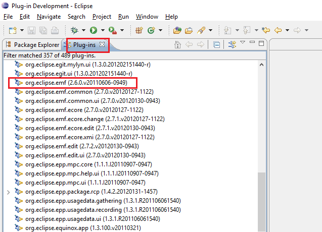
Install: ScalaIDE 3.0.0 Plugin
An older version of the Scala-IDE plugin (located at the ScalaIDE for Eclipse Archive site). The installation steps are:
Step 1: Download Scala-IDE Plugin
Download the update-site.zip file and extract it to a local directory on your file system. The directory structure after extraction should look like:
|
site (root directory)
|
features (directory containing the scala-ide features .jar files)
|
plugins (directory containing the scala-ide plug-ins .jar files)
|
artifacts.jar
content.jar (this is the archive file that will be selected in a later step)
Step 2: Install in Eclipse
Next launch Eclipse and select the "Install New Software..." menu option as shown in the screenshot.
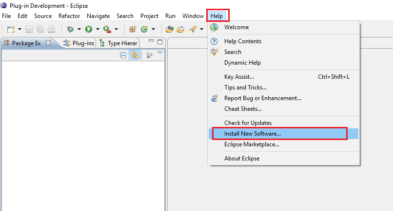
Step 3: Add Repository Dialog
In the Install wizard dialog that is launched click "Add..." to launch the Add Repository dialog.
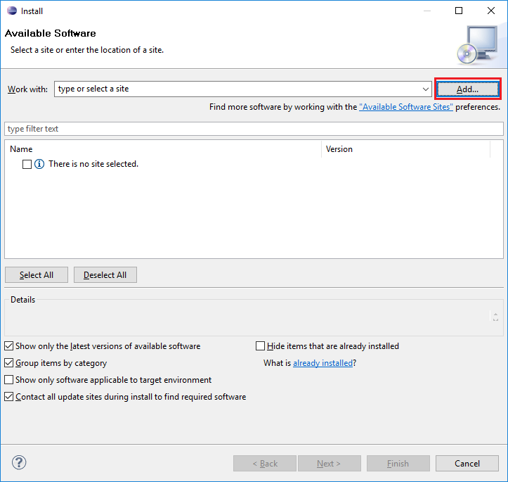
Step 4: Select Local update-site.zip
In the Add Repository dialog click "Local..." button:
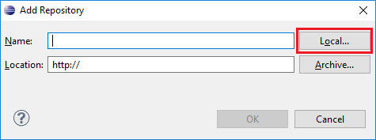
Using the file chooser navigate to the location where the update-site.zip archive was extracted to and select the \site directory and click "OK".
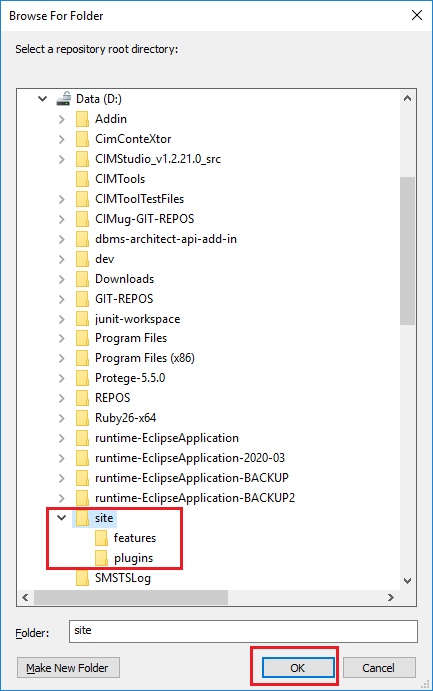
Finally, enter a name for this new local plugin repository in the Name field. Note that the Location field should now reference the \site directory you just selected (i.e. the "root" of the file structure described in step 1):
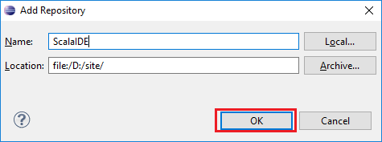
Step 5: Select Items to Install
Next, select the check boxes as shown in the details sections of the screen shot below. Once selected click the "Select All" button and then "Next" to proceed to the next page of the installation wizard.
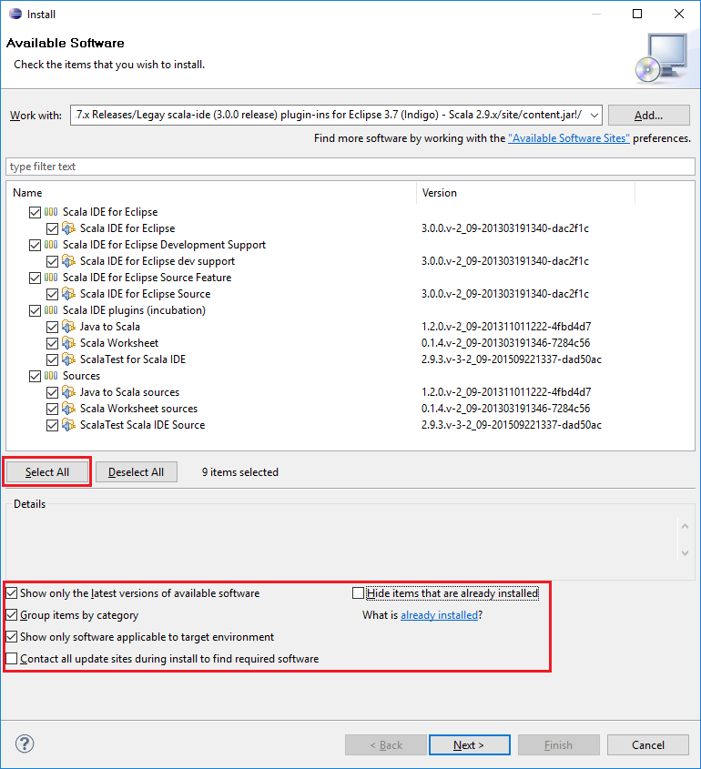
Step 6: Install Details
Continue by clicking "Next" to accept the items to be installed.
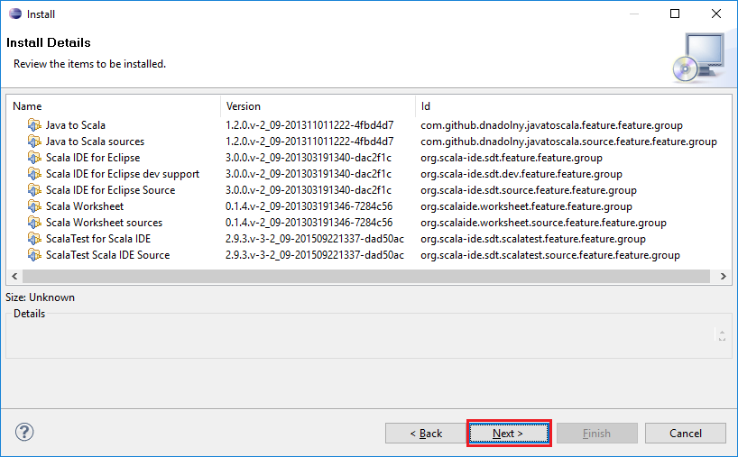
Step 7: Accept License
On the Review Licenses page select the "I accept the terms of the license agreements" radio button and click the "Finish" button.
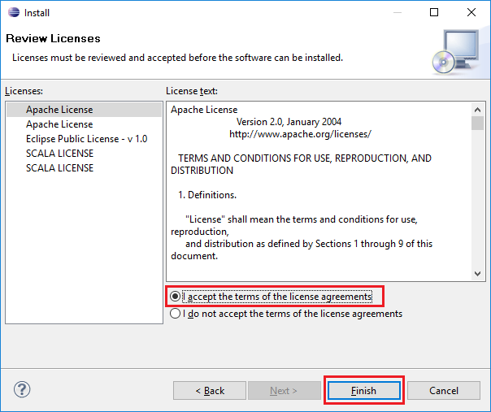
Step 8: Accept Unsigned Content Warning
A security warning will be displayed. Just click "OK" to continue.
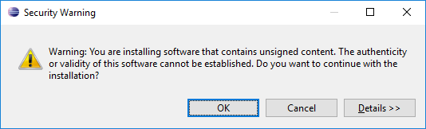
Step 9: Restart
If all was successful a final dialog is displayed asking if you want to restart in order for the plug-ins to take affect. Click the "Restart Now" button and allow your instance of Eclipse to restart.
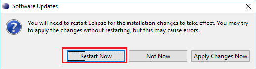
Update: Eclipse EGit Plugin
The 3.7.2 (Indigo) version of Eclipse outlined within these instructions is bundled with an older version of the EGit plugin. In view of this it is recommended that either a newer version of EGit be installed or that external Git tooling such as Git Desktop, TortoiseGit, or Git Bash be used for source code management.
From the Eclipse Foundation wiki site the EGit version support matrix outlines the following as the latest possible version of EGit support within Eclipse 3.7.2 (See: what versions of Eclipse does EGit target):
| EGit | Contained in release train | Supported Version of Eclipse |
|---|---|---|
| 2.3.1.201302201838-r | 3.8.2/4.2.2 (Juno SR2) | Eclipse 3.7.2+ (Indigo) (except EGit Import Support feature, which is optional) |
Then from the Where can I find older releases of EGit? section of the wiki we locate the p2 repository URL to be used during update:
| Release Version | Release Date | p2 repository URL | browse p2 repository | download p2 repository |
|---|---|---|---|---|
| 2.3.1.201302201838-r | 2013-03-01 | https://archive.eclipse.org/egit/updates-2.3 | updates-2.3 | 2.3.1.201302201838-r |
Steps to Install the EGit Plugin Update
Step 1: Install New Software Menu
Again navigate to the "Install New Software..." menu option as shown.
Step 2: Open Repository Dialog
In the Install wizard dialog that is launched click "Add..." to launch the Add Repository dialog.
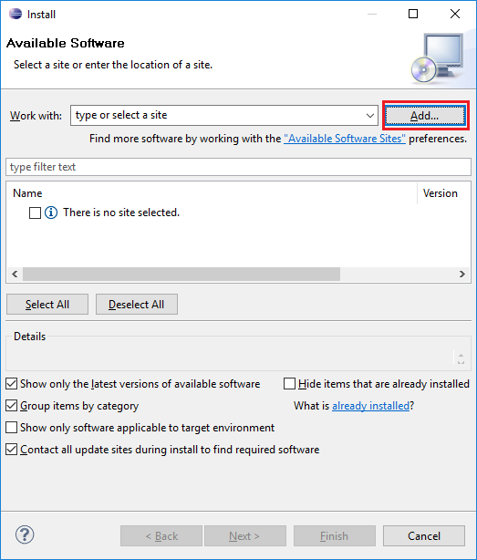
Step 3: Add Respository
In the Add Repository dialog simply add the description and the p2 repository URL (previously located) into the fields as shown and select the OK button.
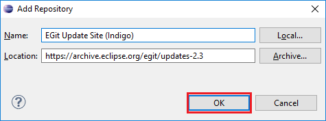
Step 4: Select Checkboxes
Next, select the checkboxes as shown in the screenshot. Once selected click the Next button to proceed to the next page of the installation wizard.
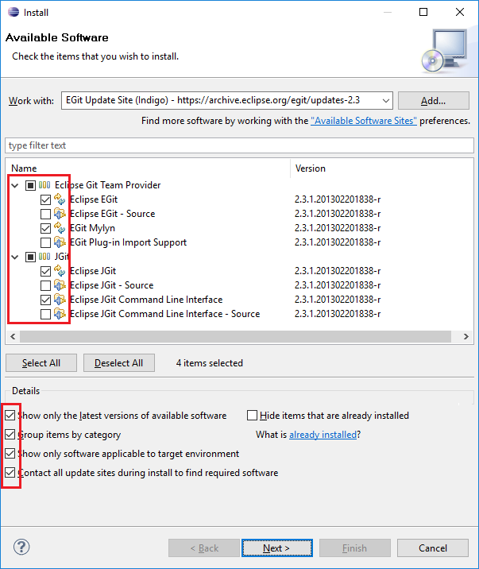
Step 5: Accept Install Items
Continue by clicking Next to accept the items to be installed.
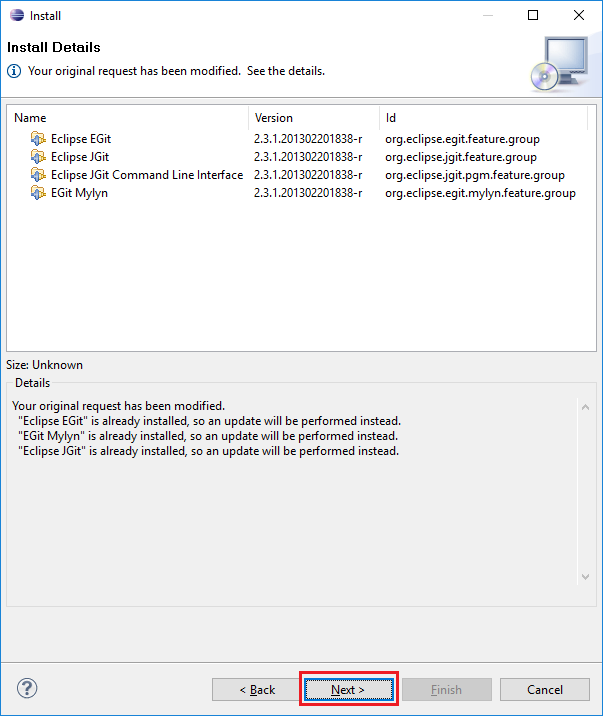
Step 6: Accept License
On the Review Licenses page select the "I accept the terms of the license agreements" radio button and click the Finish button.
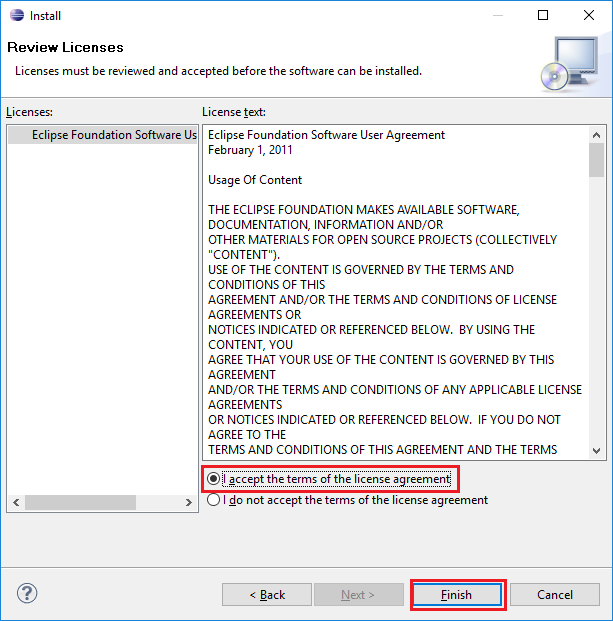
Step 7: Accept Unsigned Content Warning
If a security warning is displayed. Just click OK to continue.
Step 8: Restart
If all was successful a final dialog is displayed asking if you want to restart in order for the plug-ins to take affect. Click the "Restart Now" button and allow your instance of Eclipse to restart.
Note
On rare occasion, it has been observed that during installation of the EGit plugin update that at Steps 6 or Step 7 an error may occur indicating that Eclipse was unable to download specific jar artifacts as part of the installation. If this occurs simply shutdown and restart Eclipse and perform the installation steps once again. This typically will resolve any issues.
Part 3: Clone and Import of the CIMTool Project
The final steps needed to complete the setup of the CIMTool Eclipse Development Environment is to clone an appropriate development branch of the CIMTool codebase from the CIMTool GitHub Repo. There are two general approaches to clone a branch for use in Eclipse with the second being the one outlined in the steps that follow: - Utilizing external tooling such as GitHub Desktop, TortoiseGit, Git Bash, Git GUI, etc. a clone is performed to a local directory. In this scenario the projects in that directory are subsequently imported into an Eclipse workspace. - Alternatively, Eclipse's pre-bundled EGit plugin can be used to directly clone and automatically import the CIMTool projects in Eclipse.
Cloning a CIMTool Branch Using the Eclipse EGit Plugin
Step 1: Open EGit
- Start out by opening the EGit Perspective in Eclipse.
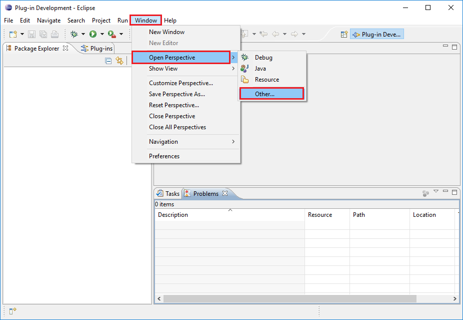
- Then select the "Git Repository Exploring" Perspective.
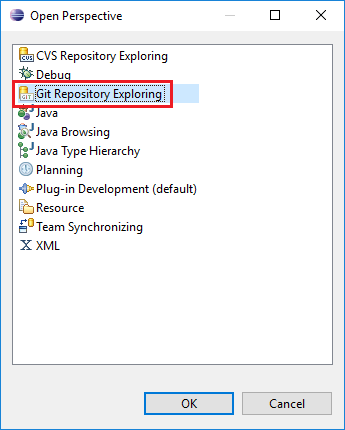
Step 2: Select Clone Option
Select the "Clone a Git repository" option as shown.
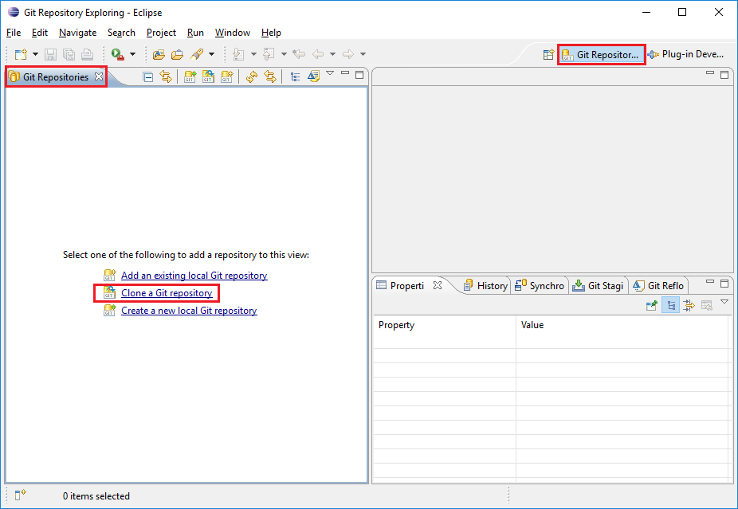
Step 3: Select Repository Location
Depending on your local Git installation you may or may not be shown the "Check Home Directory" dialog. If this dialog appears you may choose to either update the HOME environment variable and return to the previous Step 2 or you can simply check the "Do not show again" checkbox and click the OK button to accept the default Git repository location.
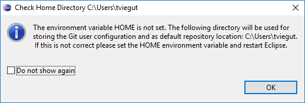
Step 4: Copy CIMTool URL
Next, in a browser locate the CIMTool GitHub Open Source Site and copy the URL of the CIMTool repository to the clipboard as shown in the screenshot below. Note that this will then be used in the "Clone Git Repository" dialog.
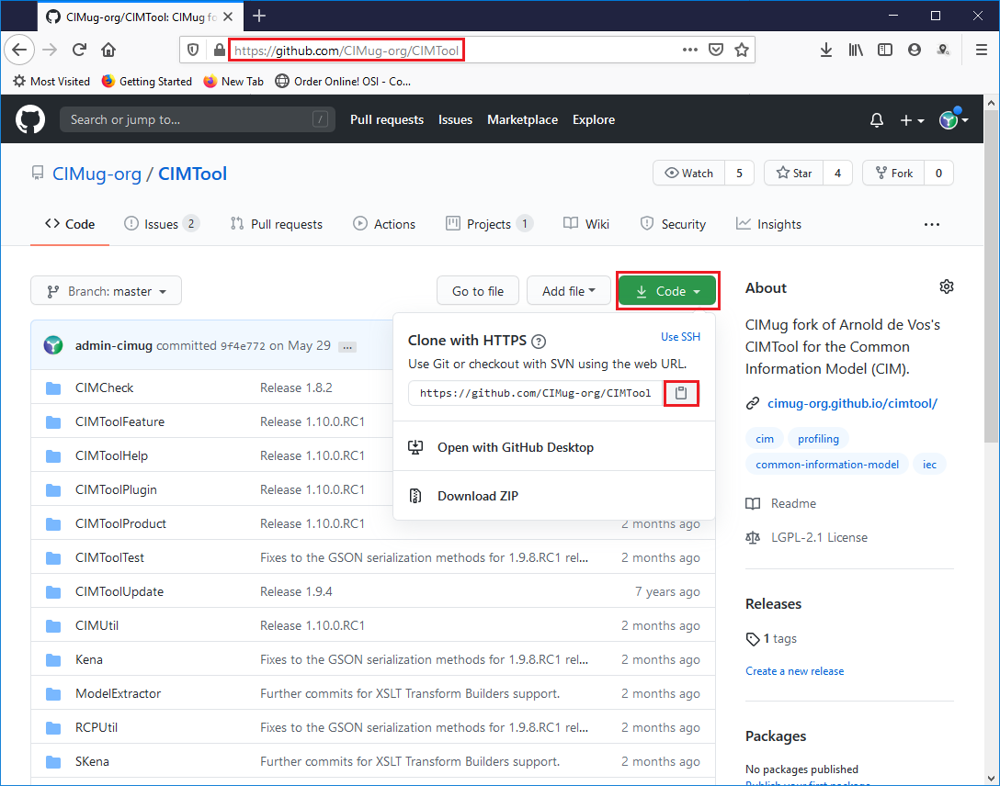
Step 5: Paste CIMTool URL
Paste the copied URL into the URI field as shown next. Doing so will then auto-populate the Host and Repository Path fields on the wizard page. At this point you must select the Protocol which can be either https or git depending on preference. Then click the Next button.
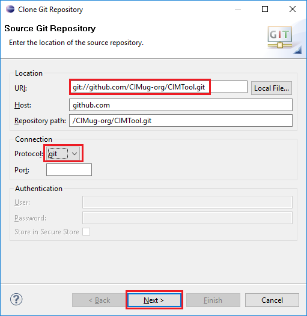
Step 6: Select Branches
The next page of the "Clone Git Repository" dialog wizard will be displayed asking for you to select the branches to clone from the remote repository. You can choose to select any number or even all branches that you may be interested in and click Next. In this example screenshot all are selected.
Note
It should be noted that if you select all branches they will be made available to you later in EGit should you desire to switch to another development branch . It is important to keep in mind that if you decide to switch to a different branch in EGit that any code changes in the branch on your local file system will be lost unless they are first stashed/shelved before switching to another branch. Stashed changes can later be reapplied when switching back to the original branch on your local file system. See EGit Stash Support introduced in 2.0 of the plugin. To utilize this functionality the EGit plugin update must be installed as outlined under the Part 2: Install Additional Plugin Dependencies section these instructions.
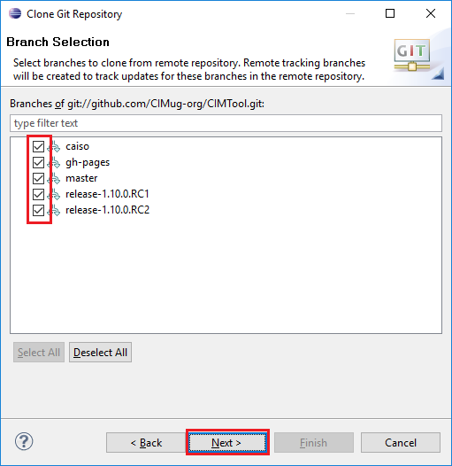
Step 7: Select Initial Branch
On the final page of the dialog wizard you should select from the Initial branch drop down the specific branch you want to clone. In this example the "release-1.10.0.RC2" branch has been selected. Note that the branch can be changed later to one of the other branches that was included in the checked list but for now choose .
Finally, be sure on this wizard page to check the "Import all existing projects after clone finishes" and click the "Finish" button.
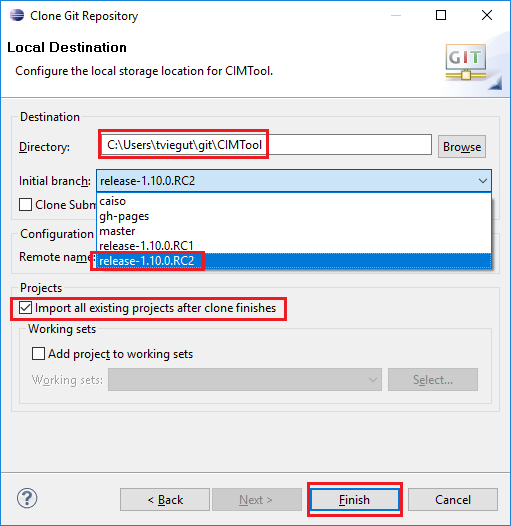
Step 8: Switch to "Plug-in Development"
After completion of the cloning and auto-import of the CIMTool projects switch to the "Plug-in Development" perspective. If there are no errors/problems to address then the Projects listed should appear similar to the next screenshot and the "Problems" tab indicate no errors.
If errors/problems do exist as illustrated in the second screenshot then continue on with Step 9 & 10 of this procedure.
-
Successful import 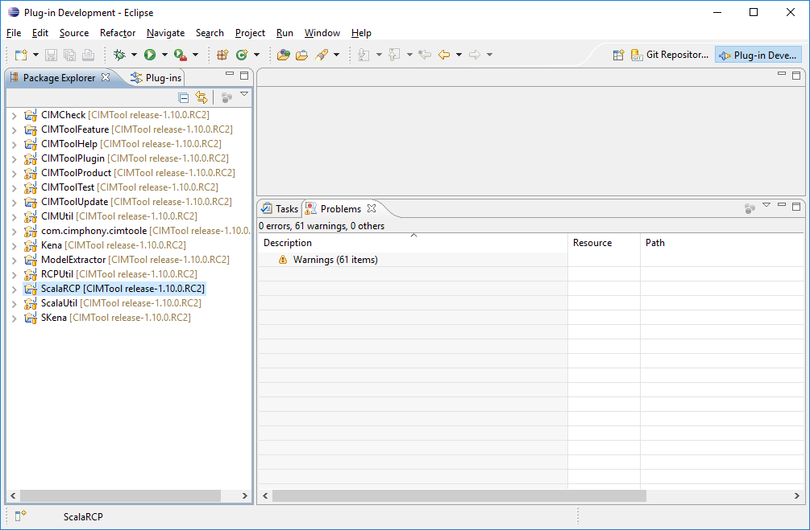
-
Import with errors 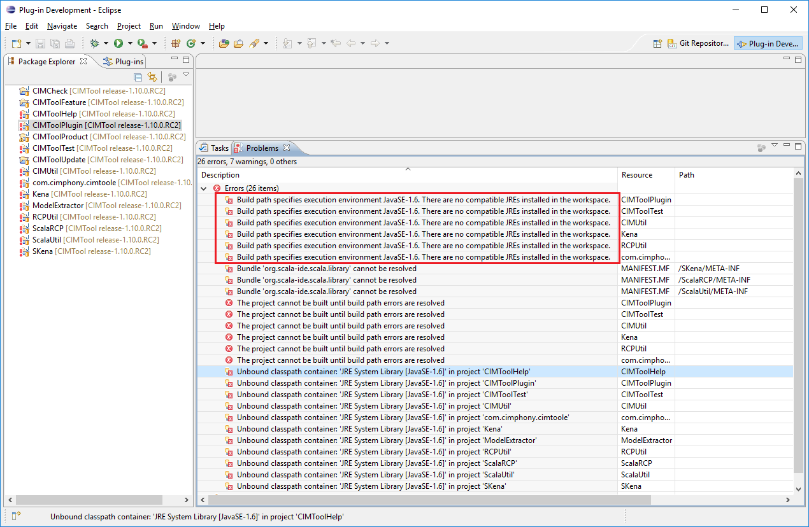
Step 9: Fix Any Auto-Import Errors
A common error after auto-import of the projects is the lack of a JDK/JRE matching that configured for the CIMTool plugin projects (currently a Java 6 JDK/JRE is needed).
Note
Note that a wide variety of versions of the OpenJDK starting with Java 6 can be download from the Azul download site. The .msi installer for 64-bit Windows of the Zulu build of OpenJDK Java 6 is located here.
Such errors will always be present when importing CIMTool projects into a new Eclipse workspace. If importing into an existing workspace that previously had Java 6 added as an Installed JDK/JRE then these errors will not appear in the projects.
If it is necessary to add the JDK/JRE, perform the steps that follow to select a JDK/JRE from those installed on the local file system. These steps assume that you already have an existing Java 6 JDK/JRE installed or have downloaded and installed it from the link previously provided above. Once installed and the Java 6 JDK/JRE selected here the remaining errors should be resolved after performing a "clean all projects" in Eclipse.
- First, from the Eclipse "Preferences" dialog select the Add button.
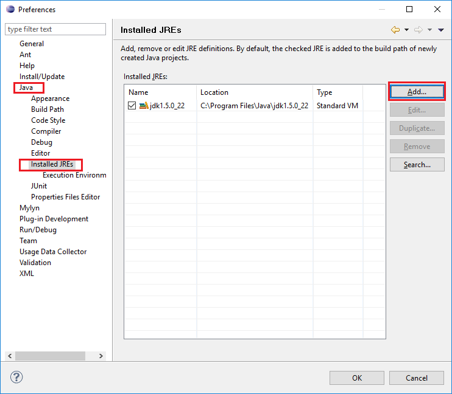
- Next, select the "Standard VM" JRE Types and click the "Next" button.
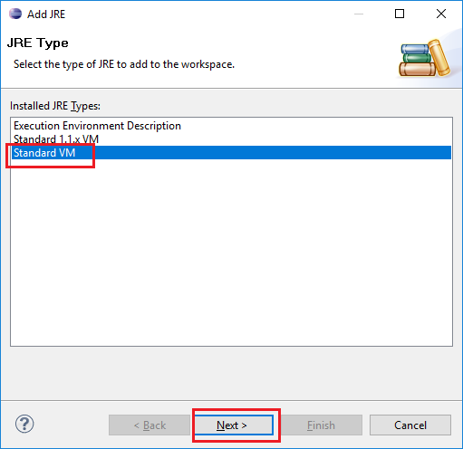
- Next, select the "Directory..." button and choose a JDK/JRE home directory on the file system corresponding to the version of the JDK/JRE desired. Note that once selected the other fields in the dialog will auto-populate. Just click the "Finish" button to add the JDK/JRE. Once finished execute a "Clean all projects" from within Eclipse.
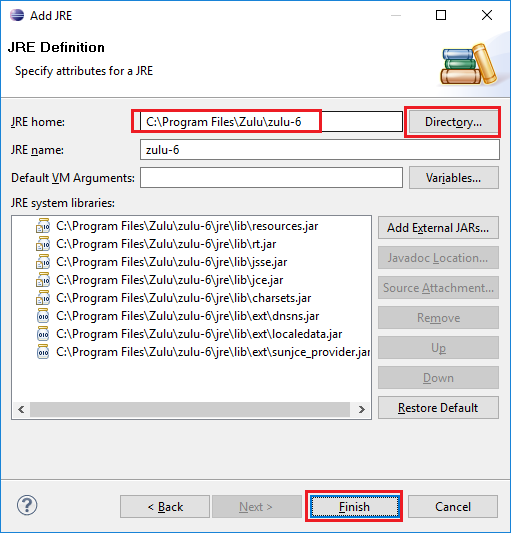
- Verify whether or not all errors have been removed from the projects or if a reduced set remains. If errors remain an observation has been that they are commonly related to the Scala libraries as shown in the next screenshot.
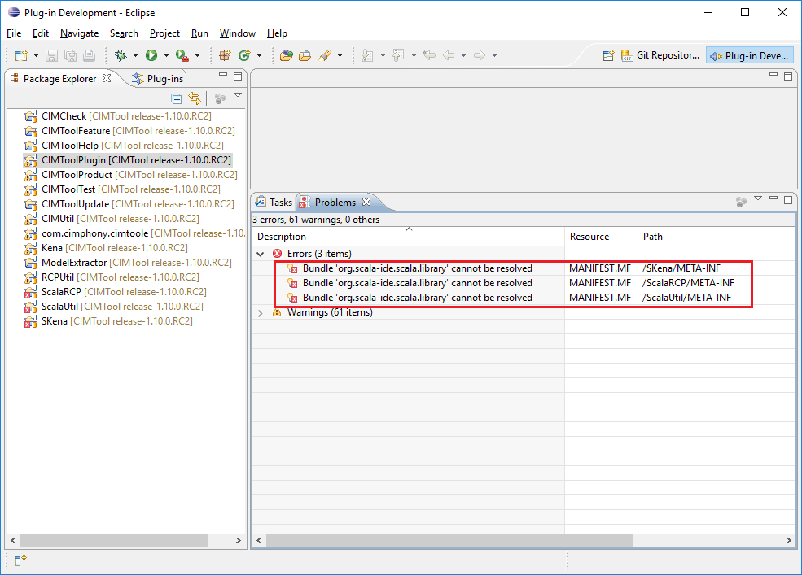
- Scala-related errors at this stage usually indicate that the steps outlined in the "Installation of the ScalaIDE 3.0.0 Plugin" section within the "Part 2: Install Additional Plugin Dependencies" of these instructions either has not yet been applied or may need to be performed again if the earlier steps were not accurately followed.
Once the steps have been (re)applied the remaining errors should then be resolved: